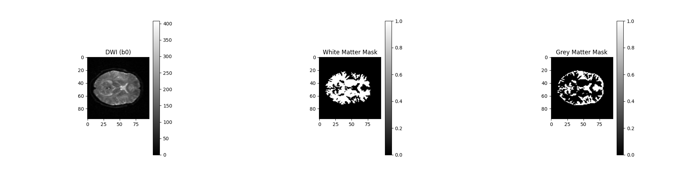

Note
Go to the end to download the full example code.
Tissue Classification using Diffusion MRI with DAM#
This example demonstrates tissue classification of white matter (WM) and gray matter (GM) from multi-shell diffusion MRI data using the Directional Average Maps (DAM) proposed by [1]. DAM uses the diffusion properties of the tissue to classify the voxels into WM and GM by fitting a polynomial model to the diffusion signal. The process involves preprocessing steps including skull-stripping with median otsu, denoising with Patch2Self, and then perform tissue classification.
Let’s start by loading the necessary modules:
import matplotlib.pyplot as plt
from dipy.core.gradients import gradient_table
from dipy.data import get_fnames
from dipy.denoise.patch2self import patch2self
from dipy.io.gradients import read_bvals_bvecs
from dipy.io.image import load_nifti
from dipy.segment.mask import median_otsu
from dipy.segment.tissue import dam_classifier
from dipy.viz.plotting import image_mosaic
First we fetch the diffusion image, bvalues and bvectors from the cfin dataset.
fraw, fbval, fbvec, t1_fname = get_fnames(name="cfin_multib")
data, affine = load_nifti(fraw)
bvals, bvecs = read_bvals_bvecs(fbval, fbvec)
gtab = gradient_table(bvals, bvecs=bvecs)
After loading the diffusion data, we can apply the median_otsu algorithm to skull-strip the data and obtain a binary mask. We can then use the mask to denoise the data using the Patch2Self algorithm.
b0_mask, mask = median_otsu(data, median_radius=2, numpass=1, vol_idx=[0, 1])
denoised_arr = patch2self(b0_mask, bvals=bvals, b0_denoising=False)
Fitting and Denoising: 0%| | 0/496 [00:00<?, ?it/s]
Fitting and Denoising: 0%| | 2/496 [00:00<00:53, 9.19it/s]
Fitting and Denoising: 1%| | 3/496 [00:00<01:01, 8.01it/s]
Fitting and Denoising: 1%| | 4/496 [00:00<01:06, 7.39it/s]
Fitting and Denoising: 1%| | 5/496 [00:00<01:08, 7.16it/s]
Fitting and Denoising: 1%| | 6/496 [00:00<01:10, 6.97it/s]
Fitting and Denoising: 1%|▏ | 7/496 [00:00<01:11, 6.87it/s]
Fitting and Denoising: 2%|▏ | 8/496 [00:01<01:11, 6.80it/s]
Fitting and Denoising: 2%|▏ | 9/496 [00:01<01:12, 6.72it/s]
Fitting and Denoising: 2%|▏ | 10/496 [00:01<01:12, 6.67it/s]
Fitting and Denoising: 2%|▏ | 11/496 [00:01<01:13, 6.59it/s]
Fitting and Denoising: 2%|▏ | 12/496 [00:01<01:13, 6.62it/s]
Fitting and Denoising: 3%|▎ | 13/496 [00:01<01:14, 6.52it/s]
Fitting and Denoising: 3%|▎ | 14/496 [00:02<01:13, 6.52it/s]
Fitting and Denoising: 3%|▎ | 15/496 [00:02<01:12, 6.60it/s]
Fitting and Denoising: 3%|▎ | 16/496 [00:02<01:12, 6.60it/s]
Fitting and Denoising: 3%|▎ | 17/496 [00:02<01:12, 6.62it/s]
Fitting and Denoising: 4%|▎ | 18/496 [00:02<01:12, 6.61it/s]
Fitting and Denoising: 4%|▍ | 19/496 [00:02<01:11, 6.70it/s]
Fitting and Denoising: 4%|▍ | 20/496 [00:02<01:10, 6.79it/s]
Fitting and Denoising: 4%|▍ | 21/496 [00:03<01:09, 6.80it/s]
Fitting and Denoising: 4%|▍ | 22/496 [00:03<01:10, 6.73it/s]
Fitting and Denoising: 5%|▍ | 23/496 [00:03<01:09, 6.78it/s]
Fitting and Denoising: 5%|▍ | 24/496 [00:03<01:08, 6.85it/s]
Fitting and Denoising: 5%|▌ | 25/496 [00:03<01:08, 6.87it/s]
Fitting and Denoising: 5%|▌ | 26/496 [00:03<01:09, 6.79it/s]
Fitting and Denoising: 5%|▌ | 27/496 [00:03<01:11, 6.53it/s]
Fitting and Denoising: 6%|▌ | 28/496 [00:04<01:10, 6.66it/s]
Fitting and Denoising: 6%|▌ | 29/496 [00:04<01:10, 6.66it/s]
Fitting and Denoising: 6%|▌ | 30/496 [00:04<01:10, 6.63it/s]
Fitting and Denoising: 6%|▋ | 31/496 [00:04<01:09, 6.66it/s]
Fitting and Denoising: 6%|▋ | 32/496 [00:04<01:09, 6.69it/s]
Fitting and Denoising: 7%|▋ | 33/496 [00:04<01:08, 6.74it/s]
Fitting and Denoising: 7%|▋ | 34/496 [00:05<01:09, 6.69it/s]
Fitting and Denoising: 7%|▋ | 35/496 [00:05<01:08, 6.70it/s]
Fitting and Denoising: 7%|▋ | 36/496 [00:05<01:08, 6.70it/s]
Fitting and Denoising: 7%|▋ | 37/496 [00:05<01:09, 6.64it/s]
Fitting and Denoising: 8%|▊ | 38/496 [00:05<01:08, 6.66it/s]
Fitting and Denoising: 8%|▊ | 39/496 [00:05<01:08, 6.66it/s]
Fitting and Denoising: 8%|▊ | 40/496 [00:05<01:08, 6.67it/s]
Fitting and Denoising: 8%|▊ | 41/496 [00:06<01:08, 6.61it/s]
Fitting and Denoising: 8%|▊ | 42/496 [00:06<01:08, 6.65it/s]
Fitting and Denoising: 9%|▊ | 43/496 [00:06<01:07, 6.71it/s]
Fitting and Denoising: 9%|▉ | 44/496 [00:06<01:06, 6.75it/s]
Fitting and Denoising: 9%|▉ | 45/496 [00:06<01:07, 6.70it/s]
Fitting and Denoising: 9%|▉ | 46/496 [00:06<01:06, 6.74it/s]
Fitting and Denoising: 9%|▉ | 47/496 [00:06<01:06, 6.75it/s]
Fitting and Denoising: 10%|▉ | 48/496 [00:07<01:07, 6.65it/s]
Fitting and Denoising: 10%|▉ | 49/496 [00:07<01:06, 6.68it/s]
Fitting and Denoising: 10%|█ | 50/496 [00:07<01:07, 6.58it/s]
Fitting and Denoising: 10%|█ | 51/496 [00:07<01:07, 6.60it/s]
Fitting and Denoising: 10%|█ | 52/496 [00:07<01:06, 6.65it/s]
Fitting and Denoising: 11%|█ | 53/496 [00:07<01:05, 6.77it/s]
Fitting and Denoising: 11%|█ | 54/496 [00:08<01:04, 6.84it/s]
Fitting and Denoising: 11%|█ | 55/496 [00:08<01:05, 6.69it/s]
Fitting and Denoising: 11%|█▏ | 56/496 [00:08<01:06, 6.66it/s]
Fitting and Denoising: 11%|█▏ | 57/496 [00:08<01:05, 6.70it/s]
Fitting and Denoising: 12%|█▏ | 58/496 [00:08<01:05, 6.69it/s]
Fitting and Denoising: 12%|█▏ | 59/496 [00:08<01:04, 6.76it/s]
Fitting and Denoising: 12%|█▏ | 60/496 [00:08<01:05, 6.62it/s]
Fitting and Denoising: 12%|█▏ | 61/496 [00:09<01:04, 6.70it/s]
Fitting and Denoising: 12%|█▎ | 62/496 [00:09<01:03, 6.81it/s]
Fitting and Denoising: 13%|█▎ | 63/496 [00:09<01:03, 6.77it/s]
Fitting and Denoising: 13%|█▎ | 64/496 [00:09<01:03, 6.81it/s]
Fitting and Denoising: 13%|█▎ | 65/496 [00:09<01:02, 6.88it/s]
Fitting and Denoising: 13%|█▎ | 66/496 [00:09<01:02, 6.84it/s]
Fitting and Denoising: 14%|█▎ | 67/496 [00:09<01:03, 6.72it/s]
Fitting and Denoising: 14%|█▎ | 68/496 [00:10<01:03, 6.78it/s]
Fitting and Denoising: 14%|█▍ | 69/496 [00:10<01:03, 6.71it/s]
Fitting and Denoising: 14%|█▍ | 70/496 [00:10<01:02, 6.80it/s]
Fitting and Denoising: 14%|█▍ | 71/496 [00:10<01:02, 6.78it/s]
Fitting and Denoising: 15%|█▍ | 72/496 [00:10<01:03, 6.73it/s]
Fitting and Denoising: 15%|█▍ | 73/496 [00:10<01:03, 6.62it/s]
Fitting and Denoising: 15%|█▍ | 74/496 [00:10<01:03, 6.66it/s]
Fitting and Denoising: 15%|█▌ | 75/496 [00:11<01:02, 6.73it/s]
Fitting and Denoising: 15%|█▌ | 76/496 [00:11<01:03, 6.65it/s]
Fitting and Denoising: 16%|█▌ | 77/496 [00:11<01:02, 6.73it/s]
Fitting and Denoising: 16%|█▌ | 78/496 [00:11<01:02, 6.66it/s]
Fitting and Denoising: 16%|█▌ | 79/496 [00:11<01:02, 6.64it/s]
Fitting and Denoising: 16%|█▌ | 80/496 [00:11<01:02, 6.64it/s]
Fitting and Denoising: 16%|█▋ | 81/496 [00:12<01:02, 6.68it/s]
Fitting and Denoising: 17%|█▋ | 82/496 [00:12<01:02, 6.65it/s]
Fitting and Denoising: 17%|█▋ | 83/496 [00:12<01:01, 6.68it/s]
Fitting and Denoising: 17%|█▋ | 84/496 [00:12<01:00, 6.78it/s]
Fitting and Denoising: 17%|█▋ | 85/496 [00:12<01:00, 6.78it/s]
Fitting and Denoising: 17%|█▋ | 86/496 [00:12<01:00, 6.82it/s]
Fitting and Denoising: 18%|█▊ | 87/496 [00:12<01:00, 6.79it/s]
Fitting and Denoising: 18%|█▊ | 88/496 [00:13<00:59, 6.81it/s]
Fitting and Denoising: 18%|█▊ | 89/496 [00:13<00:59, 6.88it/s]
Fitting and Denoising: 18%|█▊ | 90/496 [00:13<00:58, 6.94it/s]
Fitting and Denoising: 18%|█▊ | 91/496 [00:13<00:58, 6.97it/s]
Fitting and Denoising: 19%|█▊ | 92/496 [00:13<00:58, 6.95it/s]
Fitting and Denoising: 19%|█▉ | 93/496 [00:13<00:58, 6.94it/s]
Fitting and Denoising: 19%|█▉ | 94/496 [00:13<00:58, 6.88it/s]
Fitting and Denoising: 19%|█▉ | 95/496 [00:14<00:57, 6.93it/s]
Fitting and Denoising: 19%|█▉ | 96/496 [00:14<00:57, 6.92it/s]
Fitting and Denoising: 20%|█▉ | 97/496 [00:14<00:58, 6.80it/s]
Fitting and Denoising: 20%|█▉ | 98/496 [00:14<00:58, 6.77it/s]
Fitting and Denoising: 20%|█▉ | 99/496 [00:14<01:03, 6.24it/s]
Fitting and Denoising: 20%|██ | 100/496 [00:14<01:02, 6.38it/s]
Fitting and Denoising: 20%|██ | 101/496 [00:14<01:01, 6.43it/s]
Fitting and Denoising: 21%|██ | 102/496 [00:15<01:00, 6.54it/s]
Fitting and Denoising: 21%|██ | 103/496 [00:15<00:59, 6.60it/s]
Fitting and Denoising: 21%|██ | 104/496 [00:15<00:59, 6.64it/s]
Fitting and Denoising: 21%|██ | 105/496 [00:15<00:59, 6.59it/s]
Fitting and Denoising: 21%|██▏ | 106/496 [00:15<00:58, 6.67it/s]
Fitting and Denoising: 22%|██▏ | 107/496 [00:15<00:57, 6.71it/s]
Fitting and Denoising: 22%|██▏ | 108/496 [00:16<00:57, 6.74it/s]
Fitting and Denoising: 22%|██▏ | 109/496 [00:16<00:56, 6.83it/s]
Fitting and Denoising: 22%|██▏ | 110/496 [00:16<00:56, 6.79it/s]
Fitting and Denoising: 22%|██▏ | 111/496 [00:16<00:58, 6.62it/s]
Fitting and Denoising: 23%|██▎ | 112/496 [00:16<00:57, 6.68it/s]
Fitting and Denoising: 23%|██▎ | 113/496 [00:16<00:57, 6.69it/s]
Fitting and Denoising: 23%|██▎ | 114/496 [00:16<00:56, 6.73it/s]
Fitting and Denoising: 23%|██▎ | 115/496 [00:17<00:57, 6.60it/s]
Fitting and Denoising: 23%|██▎ | 116/496 [00:17<00:56, 6.67it/s]
Fitting and Denoising: 24%|██▎ | 117/496 [00:17<00:56, 6.73it/s]
Fitting and Denoising: 24%|██▍ | 118/496 [00:17<00:56, 6.72it/s]
Fitting and Denoising: 24%|██▍ | 119/496 [00:17<00:55, 6.75it/s]
Fitting and Denoising: 24%|██▍ | 120/496 [00:17<00:55, 6.81it/s]
Fitting and Denoising: 24%|██▍ | 121/496 [00:17<00:55, 6.77it/s]
Fitting and Denoising: 25%|██▍ | 122/496 [00:18<00:55, 6.73it/s]
Fitting and Denoising: 25%|██▍ | 123/496 [00:18<00:54, 6.82it/s]
Fitting and Denoising: 25%|██▌ | 124/496 [00:18<00:55, 6.74it/s]
Fitting and Denoising: 25%|██▌ | 125/496 [00:18<00:54, 6.77it/s]
Fitting and Denoising: 25%|██▌ | 126/496 [00:18<00:54, 6.78it/s]
Fitting and Denoising: 26%|██▌ | 127/496 [00:18<00:53, 6.84it/s]
Fitting and Denoising: 26%|██▌ | 128/496 [00:18<00:54, 6.80it/s]
Fitting and Denoising: 26%|██▌ | 129/496 [00:19<00:54, 6.73it/s]
Fitting and Denoising: 26%|██▌ | 130/496 [00:19<00:53, 6.82it/s]
Fitting and Denoising: 26%|██▋ | 131/496 [00:19<00:52, 6.89it/s]
Fitting and Denoising: 27%|██▋ | 132/496 [00:19<00:52, 6.96it/s]
Fitting and Denoising: 27%|██▋ | 133/496 [00:19<00:52, 6.98it/s]
Fitting and Denoising: 27%|██▋ | 134/496 [00:19<00:52, 6.90it/s]
Fitting and Denoising: 27%|██▋ | 135/496 [00:20<00:53, 6.80it/s]
Fitting and Denoising: 27%|██▋ | 136/496 [00:20<00:52, 6.83it/s]
Fitting and Denoising: 28%|██▊ | 137/496 [00:20<00:53, 6.74it/s]
Fitting and Denoising: 28%|██▊ | 138/496 [00:20<00:55, 6.41it/s]
Fitting and Denoising: 28%|██▊ | 139/496 [00:20<00:55, 6.47it/s]
Fitting and Denoising: 28%|██▊ | 140/496 [00:20<00:54, 6.52it/s]
Fitting and Denoising: 28%|██▊ | 141/496 [00:20<00:54, 6.52it/s]
Fitting and Denoising: 29%|██▊ | 142/496 [00:21<00:54, 6.47it/s]
Fitting and Denoising: 29%|██▉ | 143/496 [00:21<00:53, 6.57it/s]
Fitting and Denoising: 29%|██▉ | 144/496 [00:21<00:53, 6.62it/s]
Fitting and Denoising: 29%|██▉ | 145/496 [00:21<00:52, 6.66it/s]
Fitting and Denoising: 29%|██▉ | 146/496 [00:21<00:52, 6.65it/s]
Fitting and Denoising: 30%|██▉ | 147/496 [00:21<00:52, 6.66it/s]
Fitting and Denoising: 30%|██▉ | 148/496 [00:21<00:52, 6.68it/s]
Fitting and Denoising: 30%|███ | 149/496 [00:22<00:51, 6.70it/s]
Fitting and Denoising: 30%|███ | 150/496 [00:22<00:51, 6.68it/s]
Fitting and Denoising: 30%|███ | 151/496 [00:22<00:51, 6.69it/s]
Fitting and Denoising: 31%|███ | 152/496 [00:22<00:52, 6.53it/s]
Fitting and Denoising: 31%|███ | 153/496 [00:22<00:51, 6.64it/s]
Fitting and Denoising: 31%|███ | 154/496 [00:22<00:50, 6.72it/s]
Fitting and Denoising: 31%|███▏ | 155/496 [00:23<00:50, 6.70it/s]
Fitting and Denoising: 31%|███▏ | 156/496 [00:23<00:51, 6.67it/s]
Fitting and Denoising: 32%|███▏ | 157/496 [00:23<00:50, 6.66it/s]
Fitting and Denoising: 32%|███▏ | 158/496 [00:23<00:50, 6.75it/s]
Fitting and Denoising: 32%|███▏ | 159/496 [00:23<00:49, 6.82it/s]
Fitting and Denoising: 32%|███▏ | 160/496 [00:23<00:48, 6.87it/s]
Fitting and Denoising: 32%|███▏ | 161/496 [00:23<00:49, 6.78it/s]
Fitting and Denoising: 33%|███▎ | 162/496 [00:24<00:49, 6.80it/s]
Fitting and Denoising: 33%|███▎ | 163/496 [00:24<00:49, 6.77it/s]
Fitting and Denoising: 33%|███▎ | 164/496 [00:24<00:49, 6.74it/s]
Fitting and Denoising: 33%|███▎ | 165/496 [00:24<00:48, 6.82it/s]
Fitting and Denoising: 33%|███▎ | 166/496 [00:24<00:49, 6.72it/s]
Fitting and Denoising: 34%|███▎ | 167/496 [00:24<00:49, 6.68it/s]
Fitting and Denoising: 34%|███▍ | 168/496 [00:24<00:49, 6.67it/s]
Fitting and Denoising: 34%|███▍ | 169/496 [00:25<00:48, 6.67it/s]
Fitting and Denoising: 34%|███▍ | 170/496 [00:25<00:48, 6.67it/s]
Fitting and Denoising: 34%|███▍ | 171/496 [00:25<00:48, 6.74it/s]
Fitting and Denoising: 35%|███▍ | 172/496 [00:25<00:47, 6.76it/s]
Fitting and Denoising: 35%|███▍ | 173/496 [00:25<00:47, 6.85it/s]
Fitting and Denoising: 35%|███▌ | 174/496 [00:25<00:46, 6.86it/s]
Fitting and Denoising: 35%|███▌ | 175/496 [00:25<00:46, 6.93it/s]
Fitting and Denoising: 35%|███▌ | 176/496 [00:26<00:46, 6.85it/s]
Fitting and Denoising: 36%|███▌ | 177/496 [00:26<00:46, 6.89it/s]
Fitting and Denoising: 36%|███▌ | 178/496 [00:26<00:45, 6.92it/s]
Fitting and Denoising: 36%|███▌ | 179/496 [00:26<00:46, 6.88it/s]
Fitting and Denoising: 36%|███▋ | 180/496 [00:26<00:47, 6.68it/s]
Fitting and Denoising: 36%|███▋ | 181/496 [00:26<00:46, 6.71it/s]
Fitting and Denoising: 37%|███▋ | 182/496 [00:27<00:46, 6.78it/s]
Fitting and Denoising: 37%|███▋ | 183/496 [00:27<00:45, 6.82it/s]
Fitting and Denoising: 37%|███▋ | 184/496 [00:27<00:46, 6.70it/s]
Fitting and Denoising: 37%|███▋ | 185/496 [00:27<00:47, 6.60it/s]
Fitting and Denoising: 38%|███▊ | 186/496 [00:27<00:47, 6.51it/s]
Fitting and Denoising: 38%|███▊ | 187/496 [00:27<00:47, 6.53it/s]
Fitting and Denoising: 38%|███▊ | 188/496 [00:27<00:47, 6.49it/s]
Fitting and Denoising: 38%|███▊ | 189/496 [00:28<00:46, 6.58it/s]
Fitting and Denoising: 38%|███▊ | 190/496 [00:28<00:46, 6.62it/s]
Fitting and Denoising: 39%|███▊ | 191/496 [00:28<00:45, 6.65it/s]
Fitting and Denoising: 39%|███▊ | 192/496 [00:28<00:45, 6.70it/s]
Fitting and Denoising: 39%|███▉ | 193/496 [00:28<00:45, 6.72it/s]
Fitting and Denoising: 39%|███▉ | 194/496 [00:28<00:45, 6.62it/s]
Fitting and Denoising: 39%|███▉ | 195/496 [00:28<00:45, 6.63it/s]
Fitting and Denoising: 40%|███▉ | 196/496 [00:29<00:44, 6.70it/s]
Fitting and Denoising: 40%|███▉ | 197/496 [00:29<00:44, 6.68it/s]
Fitting and Denoising: 40%|███▉ | 198/496 [00:29<00:47, 6.29it/s]
Fitting and Denoising: 40%|████ | 199/496 [00:29<00:46, 6.32it/s]
Fitting and Denoising: 40%|████ | 200/496 [00:29<00:45, 6.52it/s]
Fitting and Denoising: 41%|████ | 201/496 [00:29<00:44, 6.65it/s]
Fitting and Denoising: 41%|████ | 202/496 [00:30<00:44, 6.59it/s]
Fitting and Denoising: 41%|████ | 203/496 [00:30<00:44, 6.60it/s]
Fitting and Denoising: 41%|████ | 204/496 [00:30<00:43, 6.66it/s]
Fitting and Denoising: 41%|████▏ | 205/496 [00:30<00:43, 6.65it/s]
Fitting and Denoising: 42%|████▏ | 206/496 [00:30<00:43, 6.65it/s]
Fitting and Denoising: 42%|████▏ | 207/496 [00:30<00:43, 6.59it/s]
Fitting and Denoising: 42%|████▏ | 208/496 [00:30<00:43, 6.57it/s]
Fitting and Denoising: 42%|████▏ | 209/496 [00:31<00:43, 6.65it/s]
Fitting and Denoising: 42%|████▏ | 210/496 [00:31<00:42, 6.68it/s]
Fitting and Denoising: 43%|████▎ | 211/496 [00:31<00:42, 6.64it/s]
Fitting and Denoising: 43%|████▎ | 212/496 [00:31<00:42, 6.66it/s]
Fitting and Denoising: 43%|████▎ | 213/496 [00:31<00:42, 6.67it/s]
Fitting and Denoising: 43%|████▎ | 214/496 [00:31<00:41, 6.76it/s]
Fitting and Denoising: 43%|████▎ | 215/496 [00:32<00:40, 6.86it/s]
Fitting and Denoising: 44%|████▎ | 216/496 [00:32<00:40, 6.90it/s]
Fitting and Denoising: 44%|████▍ | 217/496 [00:32<00:40, 6.97it/s]
Fitting and Denoising: 44%|████▍ | 218/496 [00:32<00:40, 6.85it/s]
Fitting and Denoising: 44%|████▍ | 219/496 [00:32<00:40, 6.91it/s]
Fitting and Denoising: 44%|████▍ | 220/496 [00:32<00:40, 6.88it/s]
Fitting and Denoising: 45%|████▍ | 221/496 [00:32<00:39, 6.88it/s]
Fitting and Denoising: 45%|████▍ | 222/496 [00:33<00:40, 6.84it/s]
Fitting and Denoising: 45%|████▍ | 223/496 [00:33<00:40, 6.82it/s]
Fitting and Denoising: 45%|████▌ | 224/496 [00:33<00:39, 6.88it/s]
Fitting and Denoising: 45%|████▌ | 225/496 [00:33<00:39, 6.84it/s]
Fitting and Denoising: 46%|████▌ | 226/496 [00:33<00:39, 6.80it/s]
Fitting and Denoising: 46%|████▌ | 227/496 [00:33<00:39, 6.76it/s]
Fitting and Denoising: 46%|████▌ | 228/496 [00:33<00:40, 6.69it/s]
Fitting and Denoising: 46%|████▌ | 229/496 [00:34<00:39, 6.68it/s]
Fitting and Denoising: 46%|████▋ | 230/496 [00:34<00:39, 6.74it/s]
Fitting and Denoising: 47%|████▋ | 231/496 [00:34<00:39, 6.79it/s]
Fitting and Denoising: 47%|████▋ | 232/496 [00:34<00:38, 6.84it/s]
Fitting and Denoising: 47%|████▋ | 233/496 [00:34<00:38, 6.84it/s]
Fitting and Denoising: 47%|████▋ | 234/496 [00:34<00:38, 6.79it/s]
Fitting and Denoising: 47%|████▋ | 235/496 [00:34<00:39, 6.66it/s]
Fitting and Denoising: 48%|████▊ | 236/496 [00:35<00:38, 6.71it/s]
Fitting and Denoising: 48%|████▊ | 237/496 [00:35<00:38, 6.75it/s]
Fitting and Denoising: 48%|████▊ | 238/496 [00:35<00:38, 6.73it/s]
Fitting and Denoising: 48%|████▊ | 239/496 [00:35<00:37, 6.80it/s]
Fitting and Denoising: 48%|████▊ | 240/496 [00:35<00:37, 6.84it/s]
Fitting and Denoising: 49%|████▊ | 241/496 [00:35<00:37, 6.84it/s]
Fitting and Denoising: 49%|████▉ | 242/496 [00:35<00:37, 6.84it/s]
Fitting and Denoising: 49%|████▉ | 243/496 [00:36<00:36, 6.92it/s]
Fitting and Denoising: 49%|████▉ | 244/496 [00:36<00:36, 6.87it/s]
Fitting and Denoising: 49%|████▉ | 245/496 [00:36<00:36, 6.83it/s]
Fitting and Denoising: 50%|████▉ | 246/496 [00:36<00:36, 6.83it/s]
Fitting and Denoising: 50%|████▉ | 247/496 [00:36<00:36, 6.79it/s]
Fitting and Denoising: 50%|█████ | 248/496 [00:36<00:36, 6.75it/s]
Fitting and Denoising: 50%|█████ | 249/496 [00:37<00:36, 6.72it/s]
Fitting and Denoising: 50%|█████ | 250/496 [00:37<00:36, 6.68it/s]
Fitting and Denoising: 51%|█████ | 251/496 [00:37<00:36, 6.70it/s]
Fitting and Denoising: 51%|█████ | 252/496 [00:37<00:36, 6.74it/s]
Fitting and Denoising: 51%|█████ | 253/496 [00:37<00:36, 6.71it/s]
Fitting and Denoising: 51%|█████ | 254/496 [00:37<00:35, 6.75it/s]
Fitting and Denoising: 51%|█████▏ | 255/496 [00:37<00:35, 6.75it/s]
Fitting and Denoising: 52%|█████▏ | 256/496 [00:38<00:35, 6.71it/s]
Fitting and Denoising: 52%|█████▏ | 257/496 [00:38<00:35, 6.73it/s]
Fitting and Denoising: 52%|█████▏ | 258/496 [00:38<00:35, 6.71it/s]
Fitting and Denoising: 52%|█████▏ | 259/496 [00:38<00:35, 6.65it/s]
Fitting and Denoising: 52%|█████▏ | 260/496 [00:38<00:35, 6.74it/s]
Fitting and Denoising: 53%|█████▎ | 261/496 [00:38<00:34, 6.81it/s]
Fitting and Denoising: 53%|█████▎ | 262/496 [00:38<00:34, 6.87it/s]
Fitting and Denoising: 53%|█████▎ | 263/496 [00:39<00:34, 6.74it/s]
Fitting and Denoising: 53%|█████▎ | 264/496 [00:39<00:34, 6.71it/s]
Fitting and Denoising: 53%|█████▎ | 265/496 [00:39<00:34, 6.72it/s]
Fitting and Denoising: 54%|█████▎ | 266/496 [00:39<00:33, 6.76it/s]
Fitting and Denoising: 54%|█████▍ | 267/496 [00:39<00:34, 6.72it/s]
Fitting and Denoising: 54%|█████▍ | 268/496 [00:39<00:33, 6.81it/s]
Fitting and Denoising: 54%|█████▍ | 269/496 [00:39<00:33, 6.77it/s]
Fitting and Denoising: 54%|█████▍ | 270/496 [00:40<00:33, 6.74it/s]
Fitting and Denoising: 55%|█████▍ | 271/496 [00:40<00:33, 6.81it/s]
Fitting and Denoising: 55%|█████▍ | 272/496 [00:40<00:32, 6.86it/s]
Fitting and Denoising: 55%|█████▌ | 273/496 [00:40<00:32, 6.81it/s]
Fitting and Denoising: 55%|█████▌ | 274/496 [00:40<00:32, 6.78it/s]
Fitting and Denoising: 55%|█████▌ | 275/496 [00:40<00:32, 6.79it/s]
Fitting and Denoising: 56%|█████▌ | 276/496 [00:41<00:32, 6.74it/s]
Fitting and Denoising: 56%|█████▌ | 277/496 [00:41<00:32, 6.69it/s]
Fitting and Denoising: 56%|█████▌ | 278/496 [00:41<00:32, 6.64it/s]
Fitting and Denoising: 56%|█████▋ | 279/496 [00:41<00:32, 6.66it/s]
Fitting and Denoising: 56%|█████▋ | 280/496 [00:41<00:32, 6.66it/s]
Fitting and Denoising: 57%|█████▋ | 281/496 [00:41<00:31, 6.76it/s]
Fitting and Denoising: 57%|█████▋ | 282/496 [00:41<00:31, 6.81it/s]
Fitting and Denoising: 57%|█████▋ | 283/496 [00:42<00:31, 6.83it/s]
Fitting and Denoising: 57%|█████▋ | 284/496 [00:42<00:31, 6.82it/s]
Fitting and Denoising: 57%|█████▋ | 285/496 [00:42<00:30, 6.82it/s]
Fitting and Denoising: 58%|█████▊ | 286/496 [00:42<00:31, 6.77it/s]
Fitting and Denoising: 58%|█████▊ | 287/496 [00:42<00:30, 6.78it/s]
Fitting and Denoising: 58%|█████▊ | 288/496 [00:42<00:31, 6.68it/s]
Fitting and Denoising: 58%|█████▊ | 289/496 [00:42<00:31, 6.59it/s]
Fitting and Denoising: 58%|█████▊ | 290/496 [00:43<00:31, 6.60it/s]
Fitting and Denoising: 59%|█████▊ | 291/496 [00:43<00:32, 6.37it/s]
Fitting and Denoising: 59%|█████▉ | 292/496 [00:43<00:31, 6.40it/s]
Fitting and Denoising: 59%|█████▉ | 293/496 [00:43<00:31, 6.44it/s]
Fitting and Denoising: 59%|█████▉ | 294/496 [00:43<00:31, 6.37it/s]
Fitting and Denoising: 59%|█████▉ | 295/496 [00:43<00:30, 6.50it/s]
Fitting and Denoising: 60%|█████▉ | 296/496 [00:44<00:30, 6.52it/s]
Fitting and Denoising: 60%|█████▉ | 297/496 [00:44<00:31, 6.31it/s]
Fitting and Denoising: 60%|██████ | 298/496 [00:44<00:31, 6.34it/s]
Fitting and Denoising: 60%|██████ | 299/496 [00:44<00:31, 6.34it/s]
Fitting and Denoising: 60%|██████ | 300/496 [00:44<00:30, 6.33it/s]
Fitting and Denoising: 61%|██████ | 301/496 [00:44<00:30, 6.40it/s]
Fitting and Denoising: 61%|██████ | 302/496 [00:44<00:30, 6.37it/s]
Fitting and Denoising: 61%|██████ | 303/496 [00:45<00:30, 6.42it/s]
Fitting and Denoising: 61%|██████▏ | 304/496 [00:45<00:30, 6.39it/s]
Fitting and Denoising: 61%|██████▏ | 305/496 [00:45<00:29, 6.49it/s]
Fitting and Denoising: 62%|██████▏ | 306/496 [00:45<00:28, 6.62it/s]
Fitting and Denoising: 62%|██████▏ | 307/496 [00:45<00:28, 6.65it/s]
Fitting and Denoising: 62%|██████▏ | 308/496 [00:45<00:28, 6.70it/s]
Fitting and Denoising: 62%|██████▏ | 309/496 [00:46<00:27, 6.73it/s]
Fitting and Denoising: 62%|██████▎ | 310/496 [00:46<00:27, 6.77it/s]
Fitting and Denoising: 63%|██████▎ | 311/496 [00:46<00:27, 6.83it/s]
Fitting and Denoising: 63%|██████▎ | 312/496 [00:46<00:27, 6.78it/s]
Fitting and Denoising: 63%|██████▎ | 313/496 [00:46<00:27, 6.76it/s]
Fitting and Denoising: 63%|██████▎ | 314/496 [00:46<00:26, 6.75it/s]
Fitting and Denoising: 64%|██████▎ | 315/496 [00:46<00:26, 6.78it/s]
Fitting and Denoising: 64%|██████▎ | 316/496 [00:47<00:27, 6.65it/s]
Fitting and Denoising: 64%|██████▍ | 317/496 [00:47<00:26, 6.72it/s]
Fitting and Denoising: 64%|██████▍ | 318/496 [00:47<00:26, 6.68it/s]
Fitting and Denoising: 64%|██████▍ | 319/496 [00:47<00:26, 6.66it/s]
Fitting and Denoising: 65%|██████▍ | 320/496 [00:47<00:25, 6.82it/s]
Fitting and Denoising: 65%|██████▍ | 321/496 [00:47<00:25, 6.82it/s]
Fitting and Denoising: 65%|██████▍ | 322/496 [00:47<00:25, 6.81it/s]
Fitting and Denoising: 65%|██████▌ | 323/496 [00:48<00:25, 6.80it/s]
Fitting and Denoising: 65%|██████▌ | 324/496 [00:48<00:25, 6.82it/s]
Fitting and Denoising: 66%|██████▌ | 325/496 [00:48<00:24, 6.84it/s]
Fitting and Denoising: 66%|██████▌ | 326/496 [00:48<00:24, 6.84it/s]
Fitting and Denoising: 66%|██████▌ | 327/496 [00:48<00:24, 6.79it/s]
Fitting and Denoising: 66%|██████▌ | 328/496 [00:48<00:24, 6.73it/s]
Fitting and Denoising: 66%|██████▋ | 329/496 [00:48<00:24, 6.77it/s]
Fitting and Denoising: 67%|██████▋ | 330/496 [00:49<00:24, 6.78it/s]
Fitting and Denoising: 67%|██████▋ | 331/496 [00:49<00:24, 6.87it/s]
Fitting and Denoising: 67%|██████▋ | 332/496 [00:49<00:24, 6.66it/s]
Fitting and Denoising: 67%|██████▋ | 333/496 [00:49<00:24, 6.63it/s]
Fitting and Denoising: 67%|██████▋ | 334/496 [00:49<00:24, 6.66it/s]
Fitting and Denoising: 68%|██████▊ | 335/496 [00:49<00:24, 6.64it/s]
Fitting and Denoising: 68%|██████▊ | 336/496 [00:50<00:24, 6.63it/s]
Fitting and Denoising: 68%|██████▊ | 337/496 [00:50<00:24, 6.61it/s]
Fitting and Denoising: 68%|██████▊ | 338/496 [00:50<00:23, 6.63it/s]
Fitting and Denoising: 68%|██████▊ | 339/496 [00:50<00:23, 6.67it/s]
Fitting and Denoising: 69%|██████▊ | 340/496 [00:50<00:23, 6.73it/s]
Fitting and Denoising: 69%|██████▉ | 341/496 [00:50<00:22, 6.86it/s]
Fitting and Denoising: 69%|██████▉ | 342/496 [00:50<00:22, 6.83it/s]
Fitting and Denoising: 69%|██████▉ | 343/496 [00:51<00:22, 6.82it/s]
Fitting and Denoising: 69%|██████▉ | 344/496 [00:51<00:22, 6.87it/s]
Fitting and Denoising: 70%|██████▉ | 345/496 [00:51<00:21, 6.96it/s]
Fitting and Denoising: 70%|██████▉ | 346/496 [00:51<00:21, 6.91it/s]
Fitting and Denoising: 70%|██████▉ | 347/496 [00:51<00:22, 6.61it/s]
Fitting and Denoising: 70%|███████ | 348/496 [00:51<00:22, 6.51it/s]
Fitting and Denoising: 70%|███████ | 349/496 [00:51<00:22, 6.45it/s]
Fitting and Denoising: 71%|███████ | 350/496 [00:52<00:22, 6.48it/s]
Fitting and Denoising: 71%|███████ | 351/496 [00:52<00:21, 6.63it/s]
Fitting and Denoising: 71%|███████ | 352/496 [00:52<00:21, 6.69it/s]
Fitting and Denoising: 71%|███████ | 353/496 [00:52<00:21, 6.76it/s]
Fitting and Denoising: 71%|███████▏ | 354/496 [00:52<00:21, 6.72it/s]
Fitting and Denoising: 72%|███████▏ | 355/496 [00:52<00:20, 6.73it/s]
Fitting and Denoising: 72%|███████▏ | 356/496 [00:53<00:20, 6.76it/s]
Fitting and Denoising: 72%|███████▏ | 357/496 [00:53<00:20, 6.74it/s]
Fitting and Denoising: 72%|███████▏ | 358/496 [00:53<00:20, 6.81it/s]
Fitting and Denoising: 72%|███████▏ | 359/496 [00:53<00:20, 6.77it/s]
Fitting and Denoising: 73%|███████▎ | 360/496 [00:53<00:20, 6.67it/s]
Fitting and Denoising: 73%|███████▎ | 361/496 [00:53<00:20, 6.74it/s]
Fitting and Denoising: 73%|███████▎ | 362/496 [00:53<00:19, 6.72it/s]
Fitting and Denoising: 73%|███████▎ | 363/496 [00:54<00:19, 6.86it/s]
Fitting and Denoising: 73%|███████▎ | 364/496 [00:54<00:19, 6.80it/s]
Fitting and Denoising: 74%|███████▎ | 365/496 [00:54<00:19, 6.75it/s]
Fitting and Denoising: 74%|███████▍ | 366/496 [00:54<00:19, 6.80it/s]
Fitting and Denoising: 74%|███████▍ | 367/496 [00:54<00:18, 6.94it/s]
Fitting and Denoising: 74%|███████▍ | 368/496 [00:54<00:18, 6.80it/s]
Fitting and Denoising: 74%|███████▍ | 369/496 [00:54<00:18, 6.75it/s]
Fitting and Denoising: 75%|███████▍ | 370/496 [00:55<00:18, 6.72it/s]
Fitting and Denoising: 75%|███████▍ | 371/496 [00:55<00:18, 6.86it/s]
Fitting and Denoising: 75%|███████▌ | 372/496 [00:55<00:17, 6.92it/s]
Fitting and Denoising: 75%|███████▌ | 373/496 [00:55<00:17, 6.90it/s]
Fitting and Denoising: 75%|███████▌ | 374/496 [00:55<00:18, 6.77it/s]
Fitting and Denoising: 76%|███████▌ | 375/496 [00:55<00:18, 6.65it/s]
Fitting and Denoising: 76%|███████▌ | 376/496 [00:55<00:17, 6.75it/s]
Fitting and Denoising: 76%|███████▌ | 377/496 [00:56<00:17, 6.73it/s]
Fitting and Denoising: 76%|███████▌ | 378/496 [00:56<00:17, 6.76it/s]
Fitting and Denoising: 76%|███████▋ | 379/496 [00:56<00:17, 6.75it/s]
Fitting and Denoising: 77%|███████▋ | 380/496 [00:56<00:17, 6.66it/s]
Fitting and Denoising: 77%|███████▋ | 381/496 [00:56<00:17, 6.68it/s]
Fitting and Denoising: 77%|███████▋ | 382/496 [00:56<00:16, 6.75it/s]
Fitting and Denoising: 77%|███████▋ | 383/496 [00:56<00:16, 6.75it/s]
Fitting and Denoising: 77%|███████▋ | 384/496 [00:57<00:16, 6.81it/s]
Fitting and Denoising: 78%|███████▊ | 385/496 [00:57<00:16, 6.76it/s]
Fitting and Denoising: 78%|███████▊ | 386/496 [00:57<00:16, 6.82it/s]
Fitting and Denoising: 78%|███████▊ | 387/496 [00:57<00:15, 6.86it/s]
Fitting and Denoising: 78%|███████▊ | 388/496 [00:57<00:16, 6.54it/s]
Fitting and Denoising: 78%|███████▊ | 389/496 [00:57<00:16, 6.49it/s]
Fitting and Denoising: 79%|███████▊ | 390/496 [00:58<00:16, 6.49it/s]
Fitting and Denoising: 79%|███████▉ | 391/496 [00:58<00:16, 6.50it/s]
Fitting and Denoising: 79%|███████▉ | 392/496 [00:58<00:15, 6.62it/s]
Fitting and Denoising: 79%|███████▉ | 393/496 [00:58<00:15, 6.50it/s]
Fitting and Denoising: 79%|███████▉ | 394/496 [00:58<00:15, 6.38it/s]
Fitting and Denoising: 80%|███████▉ | 395/496 [00:58<00:15, 6.37it/s]
Fitting and Denoising: 80%|███████▉ | 396/496 [00:59<00:17, 5.79it/s]
Fitting and Denoising: 80%|████████ | 397/496 [00:59<00:16, 6.09it/s]
Fitting and Denoising: 80%|████████ | 398/496 [00:59<00:15, 6.19it/s]
Fitting and Denoising: 80%|████████ | 399/496 [00:59<00:15, 6.30it/s]
Fitting and Denoising: 81%|████████ | 400/496 [00:59<00:14, 6.40it/s]
Fitting and Denoising: 81%|████████ | 401/496 [00:59<00:14, 6.49it/s]
Fitting and Denoising: 81%|████████ | 402/496 [00:59<00:14, 6.39it/s]
Fitting and Denoising: 81%|████████▏ | 403/496 [01:00<00:14, 6.31it/s]
Fitting and Denoising: 81%|████████▏ | 404/496 [01:00<00:14, 6.18it/s]
Fitting and Denoising: 82%|████████▏ | 405/496 [01:00<00:14, 6.25it/s]
Fitting and Denoising: 82%|████████▏ | 406/496 [01:00<00:14, 6.30it/s]
Fitting and Denoising: 82%|████████▏ | 407/496 [01:00<00:13, 6.49it/s]
Fitting and Denoising: 82%|████████▏ | 408/496 [01:00<00:13, 6.60it/s]
Fitting and Denoising: 82%|████████▏ | 409/496 [01:01<00:13, 6.59it/s]
Fitting and Denoising: 83%|████████▎ | 410/496 [01:01<00:12, 6.63it/s]
Fitting and Denoising: 83%|████████▎ | 411/496 [01:01<00:12, 6.61it/s]
Fitting and Denoising: 83%|████████▎ | 412/496 [01:01<00:12, 6.73it/s]
Fitting and Denoising: 83%|████████▎ | 413/496 [01:01<00:12, 6.84it/s]
Fitting and Denoising: 83%|████████▎ | 414/496 [01:01<00:12, 6.81it/s]
Fitting and Denoising: 84%|████████▎ | 415/496 [01:01<00:12, 6.64it/s]
Fitting and Denoising: 84%|████████▍ | 416/496 [01:02<00:12, 6.62it/s]
Fitting and Denoising: 84%|████████▍ | 417/496 [01:02<00:11, 6.71it/s]
Fitting and Denoising: 84%|████████▍ | 418/496 [01:02<00:11, 6.79it/s]
Fitting and Denoising: 84%|████████▍ | 419/496 [01:02<00:11, 6.67it/s]
Fitting and Denoising: 85%|████████▍ | 420/496 [01:02<00:11, 6.74it/s]
Fitting and Denoising: 85%|████████▍ | 421/496 [01:02<00:11, 6.76it/s]
Fitting and Denoising: 85%|████████▌ | 422/496 [01:02<00:11, 6.72it/s]
Fitting and Denoising: 85%|████████▌ | 423/496 [01:03<00:10, 6.69it/s]
Fitting and Denoising: 85%|████████▌ | 424/496 [01:03<00:10, 6.63it/s]
Fitting and Denoising: 86%|████████▌ | 425/496 [01:03<00:10, 6.69it/s]
Fitting and Denoising: 86%|████████▌ | 426/496 [01:03<00:10, 6.69it/s]
Fitting and Denoising: 86%|████████▌ | 427/496 [01:03<00:10, 6.67it/s]
Fitting and Denoising: 86%|████████▋ | 428/496 [01:03<00:10, 6.71it/s]
Fitting and Denoising: 86%|████████▋ | 429/496 [01:04<00:10, 6.60it/s]
Fitting and Denoising: 87%|████████▋ | 430/496 [01:04<00:10, 6.45it/s]
Fitting and Denoising: 87%|████████▋ | 431/496 [01:04<00:09, 6.51it/s]
Fitting and Denoising: 87%|████████▋ | 432/496 [01:04<00:09, 6.52it/s]
Fitting and Denoising: 87%|████████▋ | 433/496 [01:04<00:09, 6.61it/s]
Fitting and Denoising: 88%|████████▊ | 434/496 [01:04<00:09, 6.58it/s]
Fitting and Denoising: 88%|████████▊ | 435/496 [01:04<00:09, 6.53it/s]
Fitting and Denoising: 88%|████████▊ | 436/496 [01:05<00:09, 6.53it/s]
Fitting and Denoising: 88%|████████▊ | 437/496 [01:05<00:08, 6.60it/s]
Fitting and Denoising: 88%|████████▊ | 438/496 [01:05<00:08, 6.65it/s]
Fitting and Denoising: 89%|████████▊ | 439/496 [01:05<00:08, 6.62it/s]
Fitting and Denoising: 89%|████████▊ | 440/496 [01:05<00:08, 6.64it/s]
Fitting and Denoising: 89%|████████▉ | 441/496 [01:05<00:08, 6.62it/s]
Fitting and Denoising: 89%|████████▉ | 442/496 [01:06<00:08, 6.60it/s]
Fitting and Denoising: 89%|████████▉ | 443/496 [01:06<00:07, 6.68it/s]
Fitting and Denoising: 90%|████████▉ | 444/496 [01:06<00:07, 6.71it/s]
Fitting and Denoising: 90%|████████▉ | 445/496 [01:06<00:07, 6.71it/s]
Fitting and Denoising: 90%|████████▉ | 446/496 [01:06<00:07, 6.80it/s]
Fitting and Denoising: 90%|█████████ | 447/496 [01:06<00:07, 6.85it/s]
Fitting and Denoising: 90%|█████████ | 448/496 [01:06<00:07, 6.82it/s]
Fitting and Denoising: 91%|█████████ | 449/496 [01:07<00:06, 6.87it/s]
Fitting and Denoising: 91%|█████████ | 450/496 [01:07<00:06, 6.91it/s]
Fitting and Denoising: 91%|█████████ | 451/496 [01:07<00:06, 6.72it/s]
Fitting and Denoising: 91%|█████████ | 452/496 [01:07<00:06, 6.71it/s]
Fitting and Denoising: 91%|█████████▏| 453/496 [01:07<00:06, 6.74it/s]
Fitting and Denoising: 92%|█████████▏| 454/496 [01:07<00:06, 6.77it/s]
Fitting and Denoising: 92%|█████████▏| 455/496 [01:07<00:06, 6.65it/s]
Fitting and Denoising: 92%|█████████▏| 456/496 [01:08<00:06, 6.58it/s]
Fitting and Denoising: 92%|█████████▏| 457/496 [01:08<00:05, 6.51it/s]
Fitting and Denoising: 92%|█████████▏| 458/496 [01:08<00:05, 6.47it/s]
Fitting and Denoising: 93%|█████████▎| 459/496 [01:08<00:05, 6.61it/s]
Fitting and Denoising: 93%|█████████▎| 460/496 [01:08<00:05, 6.45it/s]
Fitting and Denoising: 93%|█████████▎| 461/496 [01:08<00:05, 6.43it/s]
Fitting and Denoising: 93%|█████████▎| 462/496 [01:09<00:05, 6.46it/s]
Fitting and Denoising: 93%|█████████▎| 463/496 [01:09<00:05, 6.54it/s]
Fitting and Denoising: 94%|█████████▎| 464/496 [01:09<00:04, 6.56it/s]
Fitting and Denoising: 94%|█████████▍| 465/496 [01:09<00:04, 6.49it/s]
Fitting and Denoising: 94%|█████████▍| 466/496 [01:09<00:04, 6.48it/s]
Fitting and Denoising: 94%|█████████▍| 467/496 [01:09<00:04, 6.41it/s]
Fitting and Denoising: 94%|█████████▍| 468/496 [01:09<00:04, 6.45it/s]
Fitting and Denoising: 95%|█████████▍| 469/496 [01:10<00:04, 6.43it/s]
Fitting and Denoising: 95%|█████████▍| 470/496 [01:10<00:04, 6.34it/s]
Fitting and Denoising: 95%|█████████▍| 471/496 [01:10<00:03, 6.40it/s]
Fitting and Denoising: 95%|█████████▌| 472/496 [01:10<00:03, 6.46it/s]
Fitting and Denoising: 95%|█████████▌| 473/496 [01:10<00:03, 6.53it/s]
Fitting and Denoising: 96%|█████████▌| 474/496 [01:10<00:03, 6.60it/s]
Fitting and Denoising: 96%|█████████▌| 475/496 [01:11<00:03, 6.44it/s]
Fitting and Denoising: 96%|█████████▌| 476/496 [01:11<00:03, 6.38it/s]
Fitting and Denoising: 96%|█████████▌| 477/496 [01:11<00:02, 6.42it/s]
Fitting and Denoising: 96%|█████████▋| 478/496 [01:11<00:02, 6.49it/s]
Fitting and Denoising: 97%|█████████▋| 479/496 [01:11<00:02, 6.63it/s]
Fitting and Denoising: 97%|█████████▋| 480/496 [01:11<00:02, 6.54it/s]
Fitting and Denoising: 97%|█████████▋| 481/496 [01:11<00:02, 6.56it/s]
Fitting and Denoising: 97%|█████████▋| 482/496 [01:12<00:02, 6.53it/s]
Fitting and Denoising: 97%|█████████▋| 483/496 [01:12<00:02, 6.45it/s]
Fitting and Denoising: 98%|█████████▊| 484/496 [01:12<00:01, 6.60it/s]
Fitting and Denoising: 98%|█████████▊| 485/496 [01:12<00:01, 6.46it/s]
Fitting and Denoising: 98%|█████████▊| 486/496 [01:12<00:01, 6.47it/s]
Fitting and Denoising: 98%|█████████▊| 487/496 [01:12<00:01, 6.42it/s]
Fitting and Denoising: 98%|█████████▊| 488/496 [01:13<00:01, 6.48it/s]
Fitting and Denoising: 99%|█████████▊| 489/496 [01:13<00:01, 6.57it/s]
Fitting and Denoising: 99%|█████████▉| 490/496 [01:13<00:00, 6.39it/s]
Fitting and Denoising: 99%|█████████▉| 491/496 [01:13<00:00, 6.49it/s]
Fitting and Denoising: 99%|█████████▉| 492/496 [01:13<00:00, 6.46it/s]
Fitting and Denoising: 99%|█████████▉| 493/496 [01:13<00:00, 6.45it/s]
Fitting and Denoising: 100%|█████████▉| 494/496 [01:13<00:00, 6.49it/s]
Fitting and Denoising: 100%|█████████▉| 495/496 [01:14<00:00, 6.04it/s]
Fitting and Denoising: 100%|██████████| 496/496 [01:14<00:00, 6.09it/s]
Now we can use the DAM classifier to classify the voxels into WM and GM. The DAM classifier requires the denoised data, the bvalues, and the mask. The DAM classifier returns the WM and GM masks. It is important to note that the DAM classifier is a threshold-based classifier and the threshold values can be adjusted based on the data. The wm_threshold parameter controls the sensitivity of the classifier. For data like HCP, threshold of 0.5 proves to be a good choice. For data like cfin, higher threshold values like 0.7 or 0.8 are more suitable.
wm_mask, gm_mask = dam_classifier(denoised_arr, bvals, wm_threshold=0.7)
Now we can visualize the WM and GM masks.
images = [
data[:, :, data.shape[2] // 2, 0], # DWI (b0)
wm_mask[:, :, data.shape[2] // 2], # White Matter Mask
gm_mask[:, :, data.shape[2] // 2], # Grey Matter Mask
]
ax_labels = ["DWI (b0)", "White Matter Mask", "Grey Matter Mask"]
ax_kwargs = [{"cmap": "gray"} for _ in images]
fig, ax = image_mosaic(
images, ax_labels=ax_labels, ax_kwargs=ax_kwargs, figsize=(20, 5)
)
plt.subplots_adjust(wspace=2.0)
fig.savefig("tissue_classification_dam.png")
plt.show()

Original B0 image (left), White matter (center) and gray matter (right) are binary masks as obtained from DAM.
References#
Total running time of the script: (1 minutes 29.306 seconds)